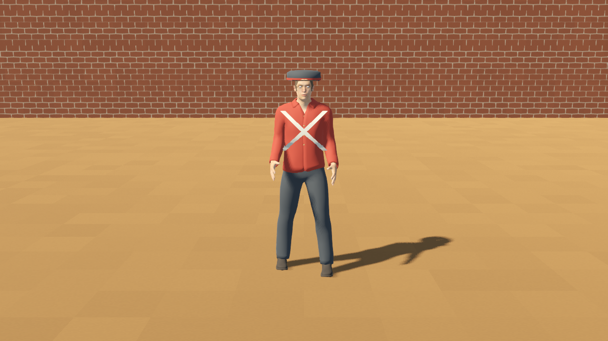
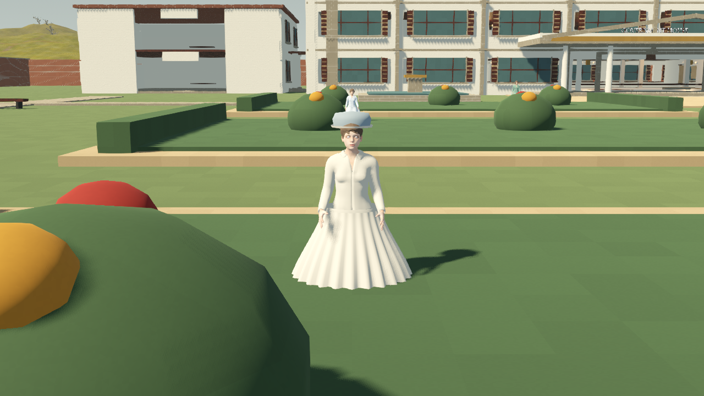

27 September 2026 · Functional preview candidates · Realism pending
Independent actors
8 men and 8 women. Each owns its skeleton, animation player, idle and walk clips, clock and movement switch. Seven military men are in the Company compound; eight women and the official are in Government House grounds.
Male walk: 0.85 seconds. Female walk: 1.05 seconds. Individual timing and separate routes.
Arms now rest downward with skirt clearance. Crossbelts follow the torso, and patrol facing follows travel. Skirts remain stiff. Foot sliding/contact and all costume deformations need a full-cycle review. Period tailoring, faces, hair, equipment and materials remain for the realism pass. Base patrols do not provide navigation, collision avoidance or gameplay AI.
Each character now has its own active idle/walk BlendSpace with a 0.2-second transition. All sixteen trees pass actual skeleton playback, start/stop idle recovery and independent stopping checks. Full implementation and evidence · Validation


Walk axis refinement
Walk pitch now accounts for each rig’s bone orientation. Knees, elbows and ankles have coordinated motion. Full-cycle tree sampling passes for all sixteen; forward ankle swing replaces sideways drift. Foot locking/contact remains open.
Walk timing now follows actual travel speed, calibrated separately from each rig’s ankle excursion. Idle breathing keeps its own timing. All sixteen pass normal/half-speed cadence and stop checks. This estimates cadence; planted feet and sole contact remain open.
Each actor now has a stance-leg solver after tree evaluation, a blended hip drop and swing ankle clearance. All sixteen pass a full out-and-back patrol ankle-target test with no reach-limit frames. Mesh soles, uneven ground, turn continuity and stiff/crouched gait still need visual refinement.
The fixed crouch offset is now calculated from leg reach. Full patrol checks still pass for all sixteen; hip drop is 0.8–2.4 cm for men and 0.8 cm for women. Fresh male/female/official poses were inspected. Hands, skirts, uneven ground and normal-speed continuity remain open.
Hand pose and patrol turn
Finger joints now relax after tree playback. The return leg pauses for a half-second turn in place. All sixteen pass hand-pose, no-translation turn, facing, tree and foot-target checks. Hands, skirt waist joins and continuous turn contact need visual work.